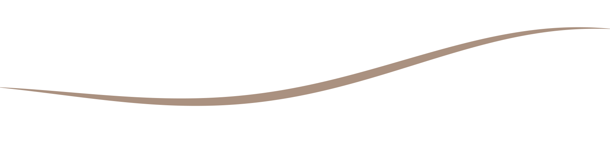

With compliments

مع أطيب التحيات
{{company.name_en}}{{contact.address_en}}
ContactT {{contact.phone_display}} · {{contact.social_handle}}
{{contact.website_display}}
{{contact.website_display}}
تواصلهاتف {{contact.phone_display}} · {{contact.social_handle}}
{{contact.website_display}}
{{contact.website_display}}
{{company.name_ar}}{{contact.address_ar}}